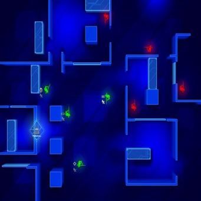

What is Situational Chess? Situational Chess(SitChess for short), is a chess variant focused on the endgame of chess. I used to compete in chess when I was younger(8-11 years old or so) and have been playing for as long as I can remember. The one thing that I always hated about chess is the heavy focus on the opening & middle parts of the game, and I always felt that the endgame is the most fun part. So I wanted to create a variant of chess that essentially allows you to skip to the end game, with both players having an equal army. When I came up with this idea I was playing a lot of: Frozen Synapse. In that game you play as small squad in a unique simultaneous/turn-based hybrid. Here is a simple screenshot to give you an idea of the game:

There is a style of play in the game where both the map and armies are randomly generated, but it is done so in a balanced fashion. So I took that principle and applied it to chess!
Each player chooses any combination of pieces that total up to 12 points in piece material. For those who are unaware of piece value, here is each piece with its value:
Note: I am aware that depending on who you ask that several players debate piece values and if they should be even considered in chess. I am ignoring that here as I needed some basic way to ensure both players have “equal” armies at the start of the game.
Example armies to choose:
The reason for 12 is to avoid players being to dependent on choosing a queen or two rooks. If for example 15 was the army value, we would have too many armies like:
Note: If you want to create an artificial handicap for a large skill gap between the two players, the better player can only use less points (11 for example).
At the start of the game each player takes turns placing one piece where they want as long as they do not go against these following rules:
Moves you see only in the opening game are not allowed. Since we are starting in the endgame, we assume that these moves would have happened earlier on in the game. The moves which are not allowed are:
If you want, you can add an element of randomness to the game by using a six-sided dice to select your army. Essentially keep rolling until your army is totaled to 12 points, a good way to spice up the game. Here are the dice-to-piece conversions:
Seriously, from here just play chess as normal. This is a great way to learn endgame principles, practice tactics, and just overall have a fun way to mix up your chess playing. Enjoy!